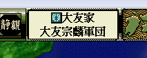
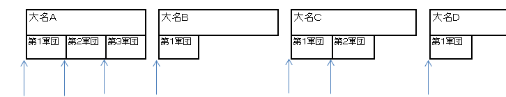
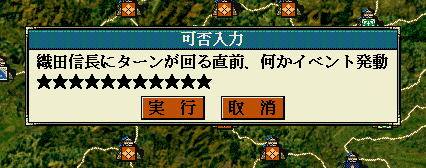

void カスタム::On_軍団ターン変更《メイン画面》(int 軍団番号) {
}
現在ターンが回ってきた軍団の軍団番号。
「pターン情報.現在の軍団【軍団番号】」と同じ番号


void カスタム::On_軍団ターン変更《メイン画面》(int 軍団番号) {
/*
* 「プレイヤ勢力麾下の軍団」でないならば
* ＣＰＵが処理をする前に、金欠、米欠なら、恵む。
*/
int iGundanID = 軍団番号-1;
if ( ! Is_プレイヤ担当軍団( iGundanID ) ) {
if ( p軍団情報[iGundanID].米 < 500 ) {
p軍団情報[iGundanID].米 = 500;
}
if ( p軍団情報[iGundanID].金 < 500 ) {
p軍団情報[iGundanID].金 = 500;
}
}
}
/*
* 織田信長のイベントを段階的に進捗させていく、というサンプル
*/
#define 織田信長イベント名 "SPL_EV01"
#define 織田信長イベント進捗・Ａ フラグ枠::Ａ
#define 織田信長イベント進捗・Ｂ フラグ枠::Ｂ
bool Check_イベント００１(int 軍団番号【配列用】) {
// 「SPL_EV01というフラグのＡ枠」がFALSEなら
if ( Get_フラグ(織田信長イベント名, 織田信長イベント進捗・Ａ) == FALSE ) {
// １５５０年～６０年の間なら発生
if ( 1550 <= Get_西暦() && Get_西暦() <= 1560 ) {
// 軍団長の武将番号【配】を求める
int iGundanLeaderBushouID = p軍団情報[軍団番号【配列用】].軍団長【武将番号】-1;
// 居れば
if ( 0 <= iGundanLeaderBushouID && iGundanLeaderBushouID < 最大数::武将情報::配列数 ) {
if ( p武将戸籍情報[iGundanLeaderBushouID].顔番号 == 顔番号::織田信長 ) { // 織田信長の顔番号
// この軍団長は、大名でもある
if ( p武将戸籍情報[iGundanLeaderBushouID].状態 == 状態::大名 ) {
実行／取消ダイアログ表示("織田信長にターンが回る直前、何かイベント発動\x0A★★★★★★★★★★★");
// このイベントが発生したというのをフラグ名SP_EV01に残す。
Set_フラグ(織田信長イベント名, TRUE, 織田信長イベント進捗・Ａ);
return true; // イベントは起きた
}
}
}
}
}
return false; // イベントは起きてない。
}
bool Check_イベント００２(int 軍団番号【配列用】) {
// 「SPL_EV01というフラグのＡ枠」がFALSEならまだこのイベントは早い。まずは、Ａが進んでから。
if ( Get_フラグ(織田信長イベント名, 織田信長イベント進捗・Ａ) == FALSE ) {
return false;
}
// 進捗Ｂがまだ発生していない。
if ( Get_フラグ(織田信長イベント名, 織田信長イベント進捗・Ｂ) == FALSE ) {
if ( 1563 <= Get_西暦() && Get_西暦() <= 1565 ) {
// イベント進捗Ｂのための処理
// このイベントが発生したというのをフラグ名SP_EV01に残す。
実行／取消ダイアログ表示("織田信長にターンが回る直前、何かイベント発動、その②\x0A★★★★★★★★★★★");
Set_フラグ(織田信長イベント名, TRUE, 織田信長イベント進捗・Ｂ);
return true;
}
}
return false; // イベントは起きてない。
}
void カスタム::On_軍団ターン変更《メイン画面》(int 軍団番号) {
Check_イベント００１(軍団番号-1);
Check_イベント００２(軍団番号-1);
}
